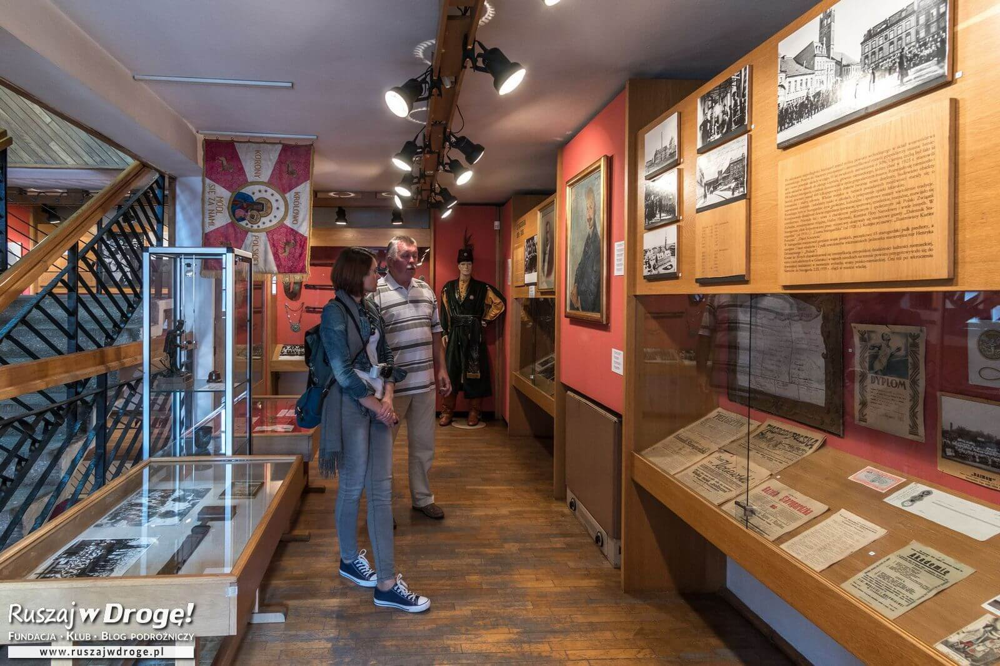
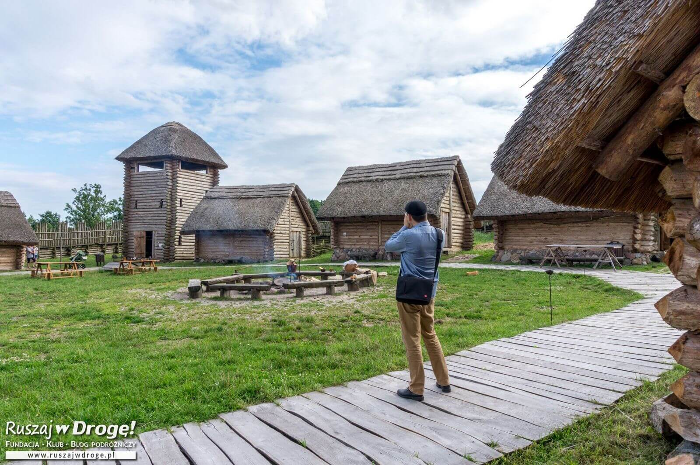
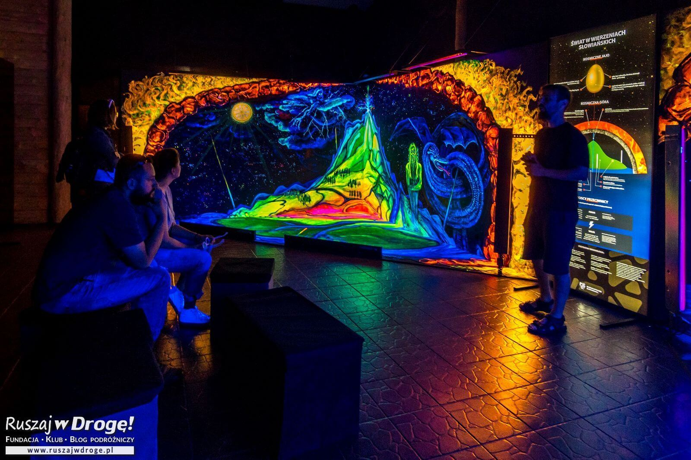

Dane o powiecie
| Siedziba | Starogard Gdański |
| Powierzchnia | 1345 km² |
| Populacja | 127 339 |
Dane kontaktowe starostwa powiatowego
| Telefon | +48 (58) 767 35 00 |
| Adres | ul. Kościuszki 17 83-200 Starogard Gdański |
| Strona | powiatstarogard.pl |
Atrakcje turystyczne
Muzeum Ziemi Kociewskiej
Tu poznasz przedwojenny Starogard z pocztówek, fotografii i gazet. Te wszystkie eksponaty znajdziesz w Baszcie Narożnej, ale kolejne – opowiadające o dalszych losach miasta – poznasz w Baszcie Gdańskiej, do której niestety nie zdążyliśmy zajrzeć. Podobno zobaczysz tam fotografie i dokumenty z czasów II wojny światowej, związane z aresztowaniami, wywózką i eksterminacją ludności polskiej i żydowskiej. Dowiesz się, jak żyli ludzie pod okupacją, jak rozwijali ruch oporu i gdzie Kociewiacy walczyli z Niemcami. Oraz co czuli, gdy do Starogardu w marcu 1945 wkroczyły wojska radzieckie.
Źródło: ruszajwdroge.plGrodzisko Owidz
Tu, gdzie dziś wznosi się grodzisko Owidz, jakieś tysiąc lat temu funkcjonowała średniowieczna osada. Dokładnej daty powstania grodziska nie znamy, ale wykopaliska archeologiczne wskazują na ten właśnie okres. W Muzeum Ziemi Kociewskiej na ścianie wisi czarno-białe zdjęcie, na którym widać gołe wzgórze. To tutaj zwiedzisz dziś zrekonstruowany palisadowy mur z bramą, chaty i wieżę obserwacyjną.
W Grodzisku zawsze coś się dzieje. Dbają o to animatorzy przebrani w stroje z epoki. Za niewielką opłatą oprowadzają po wyposażonych chatach, pokazują jak strzelać z łuku albo pomagają lepić garnki z gliny. Najciekawiej jest podczas imprez i festynów, ale i poza takimi atrakcjami nikt w Grodzisku nie będzie się nudzić.
Źródło: ruszajwdroge.plMuzeum Mitologii Słowiańskiej
Jedną z atrakcji Grodziska, otwartą dopiero w tym roku, jest jedyne w Polsce (i w Europie) Muzeum Mitologii Słowiańskiej, któremu powstaniu od początku kibicowaliśmy. Multimedialne wystawy i malowane obrazy 3D wciągają widza w tajemniczy świat zwalczających się bogów Peruna i Welesa, zabierają w podróż do świątyni czterogłowego boga Śwętowita i na podświetlanych tablicach wyjaśniają czym było Kosmiczne Jajo.
Chociaż mity słowiańskie nie przetrwały w całości, jak mity greckie czy rzymskie, można je odtworzyć jak puzzle na podstawie śladów, jakie pozostawiły w kulturze oraz przez analogię do rozwijających się w podobnym czasie wierzeń innych ludów. Z wykorzystaniem wiedzy religioznawców, historyków, językoznawców, etnografów i antropologów, muzeum odtwarza nie tylko zapomniany świat słowiańskich, pogańskich bogów, ale też wyjaśnia, skąd wziął się zwyczaj topienia Marzanny i skąd pochodzi słowo „jurny” oraz „zboże jare”.
Źródło: ruszajwdroge.pl